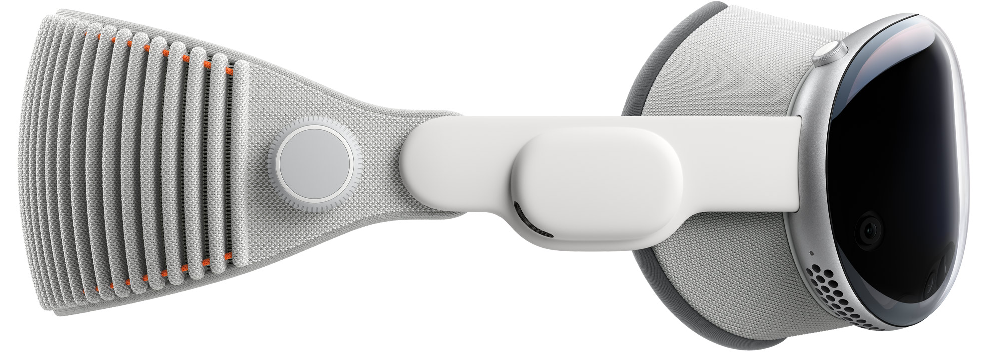

Watch the Guided Tour
Welcome to the era of
spatial computing.
Apple Vision Pro seamlessly blends digital
content with your physical space.
You navigate simply by using your
eyes, hands, and voice.
You’ve never seen everything like this before.
Watch the film
Watch the Guided Tour
Design
Designed by Apple.
Apple Vision Pro is the result of decades of experience designing
high performance, mobile, and wearable devices — culminating in
the most ambitious product Apple has ever created. Apple Vision
Pro
integrates incredibly advanced technology into an elegant, compact
form, resulting in an amazing experience every time you put it on.
Front
. A singular piece of three-dimensionally formed laminated glass flows into an aluminum alloy frame that curves to wrap around your face.
Light Seal.
The Light Seal gently flexes to conform to your face, delivering a precise fit while blocking out stray light.
Head bands
. The Solo Knit Band provides cushioning, breathability, and stretch, and a Fit Dial lets you adjust Apple Vision Pro precisely to your head. The Dual Loop Band offers an additional option for a personalized fit.
Power.
The external battery supports up to 2 hours of general use and up to 2.5 hours of video playback.1
Sound
. Speakers positioned close to your ears deliver rich Spatial Audio while keeping you aware of your surroundings.Technology
Innovation you can see, hear, and feel.
Pushing boundaries from the inside out.
Spatial experiences on Apple Vision Pro are only possible through grounaking Apple technology. Displays the size of a postage stamp that deliver more pixels than a 4K TV to each eye. Incredible advances in Spatial Audio. A revolutionary dual‑chip design featuring custom Apple silicon. A sophisticated array of cameras and sensors. All the elements work together to create an unprecedented experience you have to see to believe.
More pixels than a 4K TV. For each eye.
The custom micro‑OLED display system features 23 million pixels,
delivering stunning resolution and colors. And a specially designed
three‑element lens creates the feeling of a display that’s everywhere
you look.
Responsive, precision eye tracking.
A high‑performance eye‑tracking system of LEDs and infrared
cameras projects invisible light patterns onto each eye. This
advanced system provides ultraprecise input without your needing to
hold any controllers, so you can accurately select elements just by
looking at them.
Revolutionary dual‑chip performance.
A unique dual‑chip design enables the spatial experiences on
Apple Vision Pro. The powerful M2 chip simultaneously runs
visionOS, executes advanced computer vision algorithms, and
delivers stunning graphics, all with incredible efficiency. And the
brand-new R1 chip is specifically dedicated to process input from the
cameras, sensors, and microphones, streaming images to the
displays within 12 milliseconds — for a virtually lag-free, real-time
view of the world.